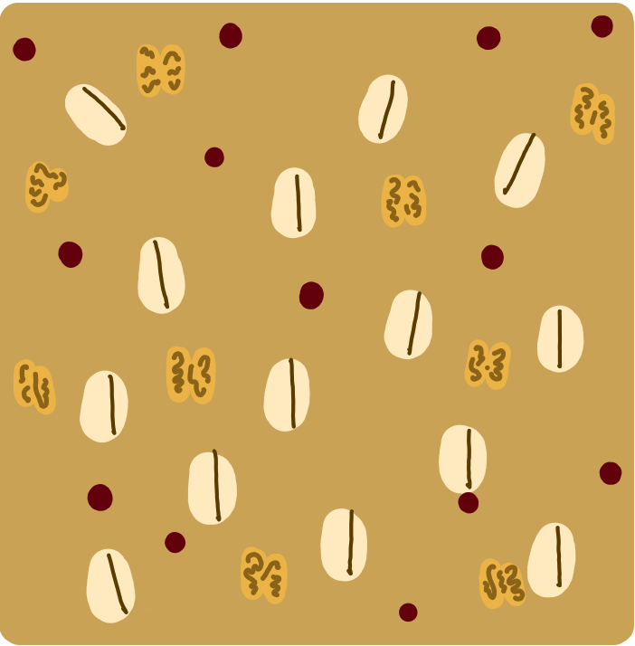
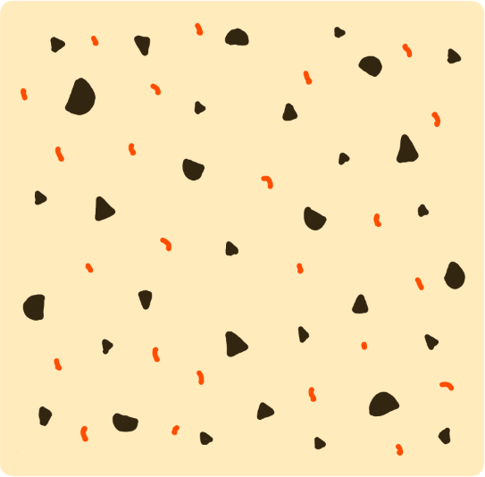
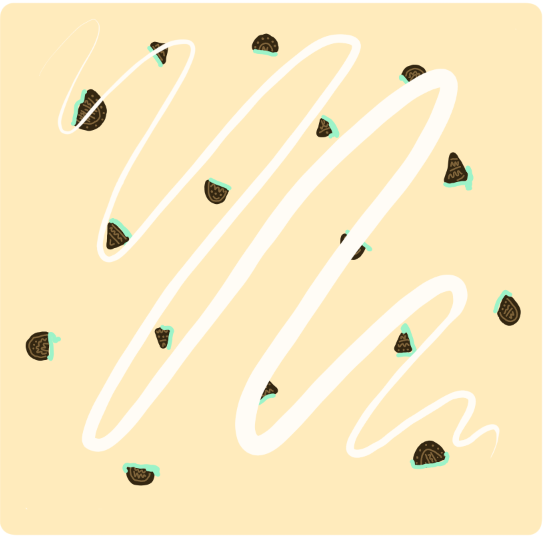

Chocolaholic
Chocolate dough filled with chocolate chips and drizzled with our signature chocolate frosting!
Morning Glory
Oatmeal dough with walnuts and locally-sourced craisins; makes a great on-the-go breakfast!

Birthday Cake
A sugar cookie topped with rainbow sprinkles and vanilla frosting, takes you back to the good ol’ days.

Pumpkin Patch
A seasonal pumpkin cookie topped with our in-house maple syrup frosting. A fall favorite!
Choco-Chili
A wacky spin on the classic chocolate chip cookie; it’s sweet… then spicy!
PB+J
Your favorite sandwich, but a cookie! A peanut butter cookie base with a gooey apricot jam center.
Mint Oreo Cheesecake
An unexpected combination, but oh so delicious. A sugar cookie base with a mint oreo mix-in and topped with cream cheese frosting.

Coco-Nut
Might be wondering how we packed so much coconut flavor in just one cookie! Our best kept secret if you ask me… A peanut butter cookie with coconut flake and toffee mix ins, topped off with a rich chocolate drizzle.

Nacho Cheese
Not for the lactose-intolerant variety. Ever wanted your favorite chip in a cookie? No? Well you got it anyways. A sugar cookie base with nacho cheese doritos thrown in the mix.

Bunny Food
For all you silly rabbits. A carrot cake cookie base topped off our award winning cream cheese frosting. Simple and yummy!